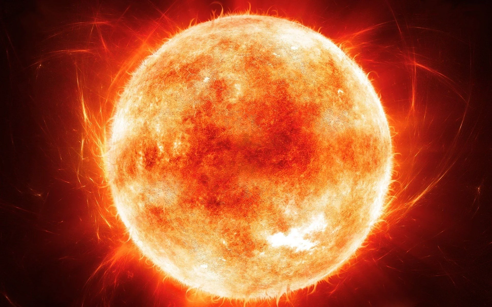
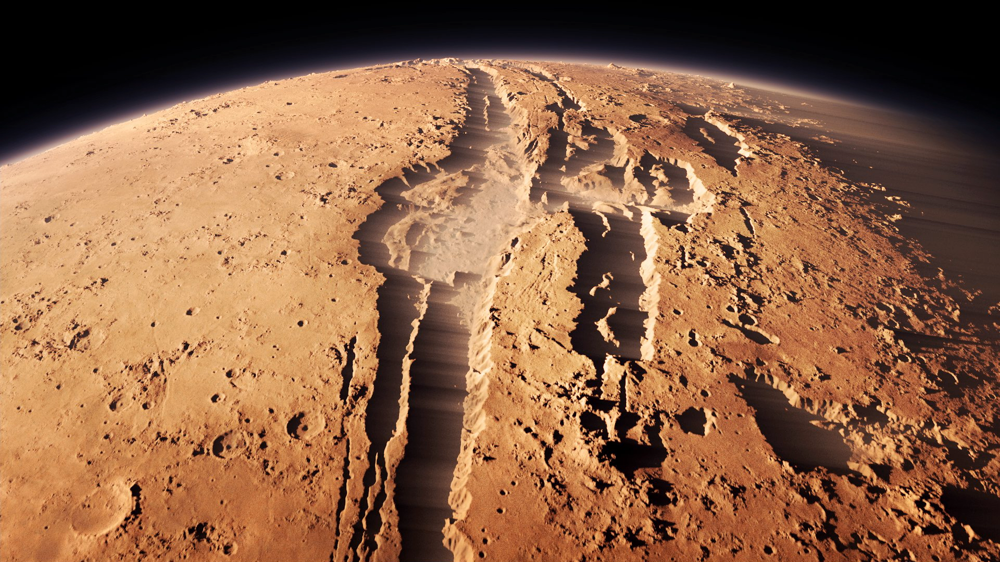
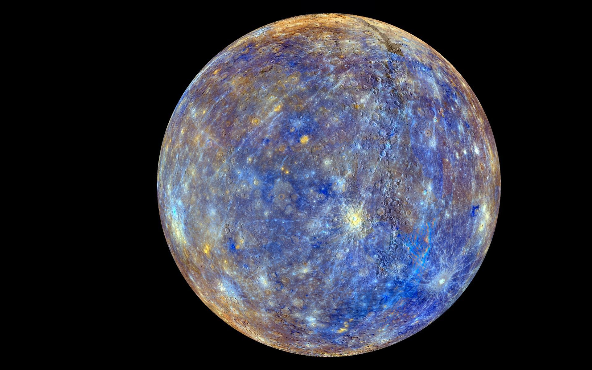
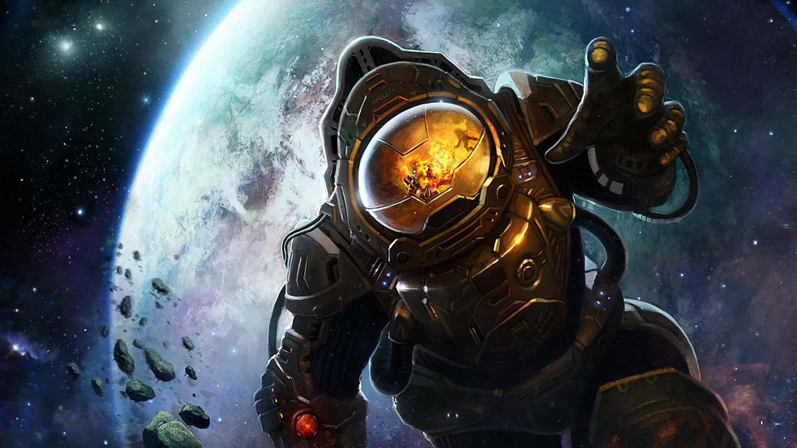
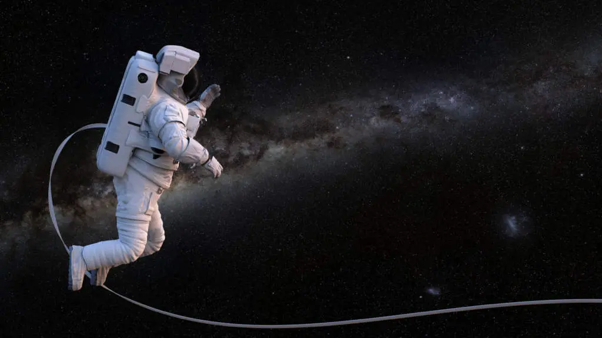
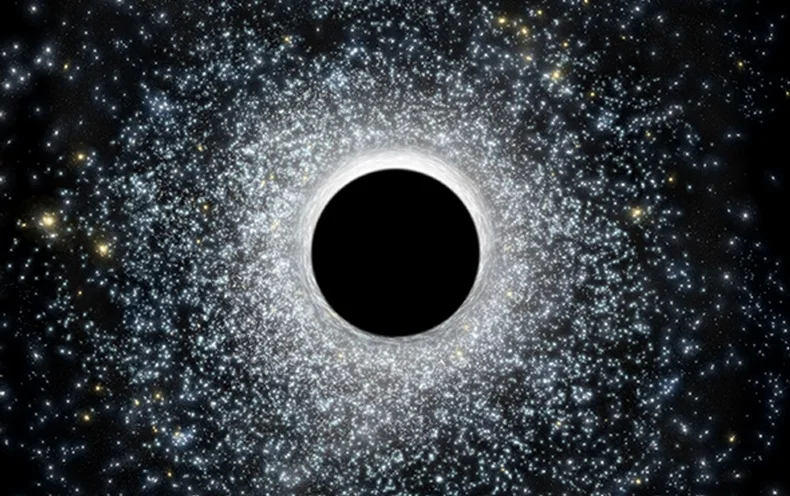
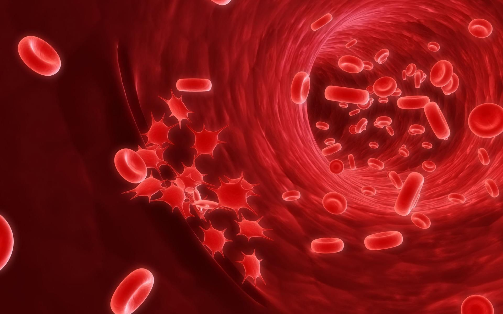

Movies rarely get sound right in space. I guess that if you’re spending a fortune on filming
an explosion or a dramatic death, you definitely want the audience to hear it. However, space means no
atmosphere which means there is nothing for the sound waves to travel though. Again, Kubrick got this one
right in 2001. However, this shouldn’t suggest that there is no sound in the universe apart from our planet.
If you go someplace else with an atmosphere, then there will be sound, but it will probably be a little
weird. On Mars, for example, sound will be higher in pitch.

Click to enlarge
The Sun is yellow
Ask anyone to draw a Sun and they will immediately reach for the yellow crayon. It seems
normal. We’ve been using that yellow crayon for the Sun ever since we were little and all we could draw was
the crappy front of a house and the Sun smiling in the corner (come on, that definitely wasn’t just me,
right?). If we ever needed more evidence, we could just go outside and look at the sun and it definitely
appears to be yellow.
Thing is, though, that we see it yellow thanks to our atmosphere. If you’re sure that you’ve seen NASA
photographs or similar images and the Sun was yellow there, too, you might actually be right. This image we
have of a yellow Sun is so prevalent that sometimes astronomers will actually modify the color of their
pictures in order to make them more recognizable. However, the real color of the Sun is white. If you ever
meet as astronaut or someone who has been to space, feel free to ask them.
Regardless, we don’t need to see the Sun to know what color it is because we can tell from the temperature.
Cool stars start off with a brown/dark red color and increase in intensity as they get hotter. Something
with only a few thousand degrees Kelvin surface temperature will be red. At the opposite end of the
spectrum, the hottest stars with a surface temp above 10000 Kelvin are blue. With a surface temperature of
almost 6000 Kelvin, the Sun is somewhere in the middle, giving it a distinct white color.

Click to enlarge
There is a face on Mars
In 1976, NASA's Viking 1 spacecraft took a picture of what appeared to be a face on Mars.
Immediately, some people said there must have been aliens on the Red Planet that left that face behind as
evidence of their existence. NASA, however, pointed out that the suspected face is really just a pile of
rocks casting shadows that resemble face-like features.
NASA followed up with better-resolution pictures taken from the Mars Reconnaissance Orbiter and the Mars
Global Surveyor in 1998 and 2001, respectively. These new images made it quite clear that the "face on Mars"
is nothing more than a trick of light and shadows on a completely normal Martian mound.

Click to enlarge
Mercury is the closest planet to the Sun, so it's the hottest
Distance from the Sun actually has little to do with the average temperature on a planet.
Venus (the second planet from the Sun) is the hottest planet in the solar system, but that's because of its
atmosphere, which contains mostly carbon dioxide and some nitrogen, making it very thick. Throughout the
year the surface of Venus remains at a temperature of about 462°C. The surface of Mercury, on the other
hand, has a lot of temperature variations. It can be as cold as -173°C at night, and during the day it might
reach 427°C. Mercury has a very thin atmosphere, which is why there's so much variation in temperature.

Click to enlarge
People explode in space
Space is a near-vacuum, which means that people can't survive out there for more than a few
minutes—but exploding isn't a concern. A body exposed in space will expand and bloat, especially the air in
the lungs and the water in body tissue, but human skin is actually tight enough to prevent exploding. A
person exposed to space would eventually die when circulation stops, after dissolved gases in the blood form
bubbles and block flow. Basically, it's like an extreme version of "the bends" that divers can get.

Click to enlarge
In space, you experience zero gravity
Gravity is considered the most important force in the universe, and it doesn't just go away
when we leave Earth. Gravity is necessary for everything from the Moon's ability to orbit the Earth to the
Sun staying put in the Milky Way. What astronauts actually experience in space is what NASA calls
micro-gravity. It has nothing to do with the actual strength of gravity, which is only very slightly less on
the International Space Station. It's because astronauts are constantly falling, so they seem weightless.

Click to enlarge
Black holes will suck everything up
If the sun instantly transformed into a black hole tonight, we wouldn’t wake up falling ever
quickly into its deadly maw. We would eventually freeze to death, but that’s not the great (but unfounded)
fear with black holes.
Black holes must obey other laws of physics, and the gravitational power of the sun would be the same if it
were somehow turned into black hole. Black holes have finite mass and, therefore, finite gravitational
force. No one knows for sure what happens to items pulled into black holes, but we do know black holes do
not possess super gravity.

Click to enlarge
Your blood would boil in space
There’s a thing called Armstrong limit, often called Armstrong’s line. It is the altitude
that produces an atmospheric pressure so low that water boils at the normal temperature of the human body:
37 °C (98.6 °F). The Armstrong line begins at an altitude of approximately 18 km (60,000 ft) to about 19 km
(62,000 ft). It would be better to wear a spacesuit above that altitude, for your own safety (your blood’s
not going to boil though, as the walls of the veins keep your blood pressure high enough to stop your blood
from boiling).
At or above the Armstrong limit, exposed bodily liquids such as saliva, tears, urine, blood, and the liquids
wetting the alveoli within the lungs – but not vascular blood (blood within the circulatory system), as
explained before -will boil away without a pressure suit, and no amount of breathable oxygen delivered by
any means will sustain life for more than a few minutes.
Click to enlarge
Astronauts fly around with jetpacks
Technically, it’s not called jetpack. It’s called the Manned Maneuvering Unit (MMU). It is an
astronaut propulsion unit that was used by NASA on three Space Shuttle missions in 1984. In the first one of
these missions, NASA astronaut Bruce McCandless II (June 8, 1937 – December 21, 2017) made the first ever
untethered free flight using the MMU and with a distance of 98 meters (320 feet) from the space shuttle, he
also broke the spacewalking record.
The MMU allowed the astronauts to perform untethered EVA spacewalks at a distance from the shuttle. The MMU
was used in practice to retrieve a pair of faulty communications satellites, Westar VI and Palapa B2.
Following the third mission, the unit was retired from use. A smaller successor, the Simplified Aid For EVA
Rescue (SAFER), was first flown in 1994 and is intended for emergency use only. So no, astronauts do not fly
around using jetpacks, MMUs, or whatever else.
Click to enlarge
All comets have tails
This is simply not true.
In fact, most of the time comets are very difficult things to find. Comets tend to spend large amounts of
time in the darkness of space.
Here, far from the influence of stars, they remain frozen and relatively inactive. They only develop tails
when they approach a star, like our Sun. At this point, they warm up and develop a cloudy atmosphere (called
a Coma) as well as their distinctive tails. These tails, as you'd expect, always point away from any star
whose influence they are under.
These tails are effectively blown away from the comet by solar winds and solar radiation. In fact, the
'tail' can actually be ahead of the comet as it flies away from the Sun!